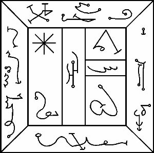

MARDUK’un sayısı ondur ve işte onun mührü:

Satürn’ün Tanrısı NINIB, Avcıların ve Erkin Tanrısı ADAR diye çağrılır. Boynuzlardan bir taç ve uzun kılıcı ile bir aslan postu giyerken görünür. Korkunç IGIGI’den önceki son Kuşaklıdır. Rengi koyu siyahtır. Özü kurşunda, ateşin yanmış közlerinde ve ölüme ve eski zamanlara ait şeylerdedir. Sembolü bir geyiğin boynuzlarıdır. Onun kapısı, takip eden ritüellerle geleceğin en sonuncudur. Işıkların Merdivenindeki Basamağı Siyahtır.
Bu, onun, kurşundan bir levha ya da kaseye dinsizin bakışlarından saklı tutarak oyman gereken Mührüdür. Kullanılması arzu edilene kadar, diğerleri gibi sarılmalı ve uzağa konulmalıdır. Güneş gökyüzündeyken asla çıkarılmamalı yalnızca gece çöktükten ve dünya karanlığa gömüldükten sonra yerinden oynatılmalıdır, çünkü NINIB demonların gölgeler arasında kurbanlar arayarak sinsi sinsi nasıl dolaştıklarını en iyi şekilde bilir. Kadimlerin ülkelerini, onlara tapanların uygulamalarını ve kapılarının yerlerini en iyi şekilde bilir. Onun krallığı Gece Vaktinin krallığıdır.